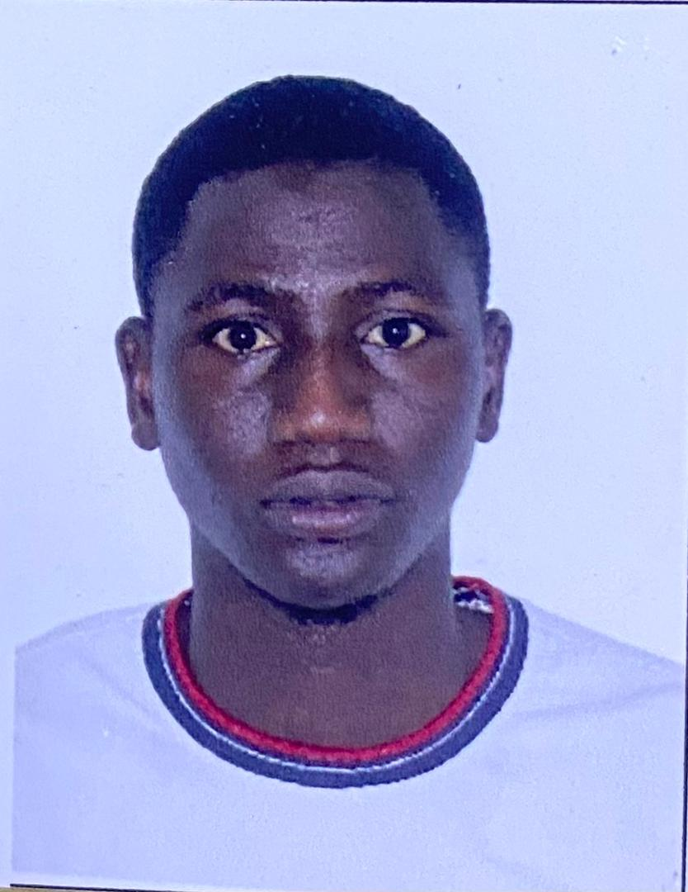

Contact
Summary
I am an ambitious and self-motivated computer science student passionate about technology, innovation, and problem-solving.
I enjoy building simple, functional, and user-friendly websites while continuously improving my skills in web development and programming.
My goal is to contribute to meaningful tech projects that create a positive impact on people’s lives.
Education
Bachelor of Science in Computer Science
Baku State University, Faculty of Applied Mathematics and Cybernetics
2024 Present
Advance Diploma Secondary Diploma in Mathematics and ICT
Gambia College, Brikama Campus
2021 – 2023
Senior Secondary School Certificate
Muslim Senior Secondary School
2016 – 2018
Work Experience
Mathematics & ICT Teacher
Bakau Upper & Kanifing Senior Secondary School, The Gambia
June 2024 – August 2024
- Taught core mathematics concepts Grade 7 to 9 students.
- Introduced students to the basics of Information and Communication Technology.
- Created engaging lessons using real-life examples to boost understanding and participation.
Freelance Web Developer (Personal Projects)
Self-employed
2025 – Present
- Designed and developed small portfolio and informational websites using HTML and CSS.
- Learned to use GitHub for hosting and project collaboration.
- Continuously exploring responsive and interactive design techniques.
Skills
- Web Development (HTML, CSS, JavaScript basics)
- Programming Logic & Problem Solving
- Microsoft Word, Excel, and PowerPoint
- Communication and Team Collaboration
- Critical Thinking & Creativity
Awards & Certifications
- Heydar Aliyev International Education Grant Recipient Ministry of Science and Education, Republic of Azerbaijan (2024)
- Certificate of Excellence in ICT Teaching Daddy Jobe Upper & Senior Secondary School (2024)
- Digital Skills Training Certificate Gambia College ICT Hub (2023)